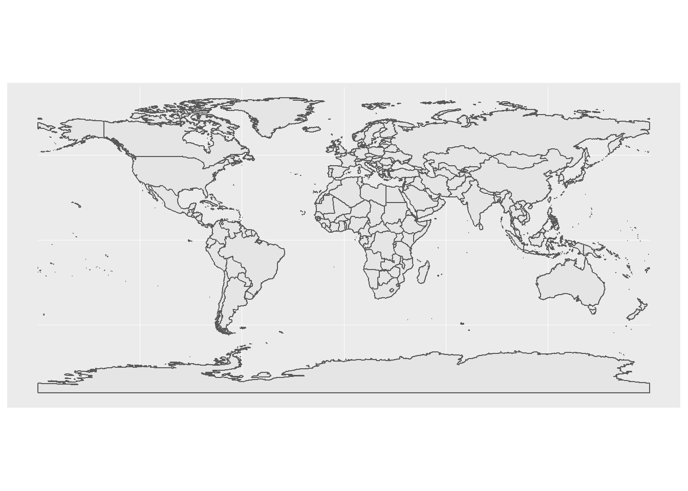
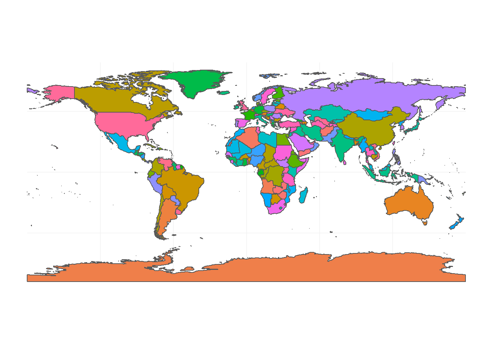
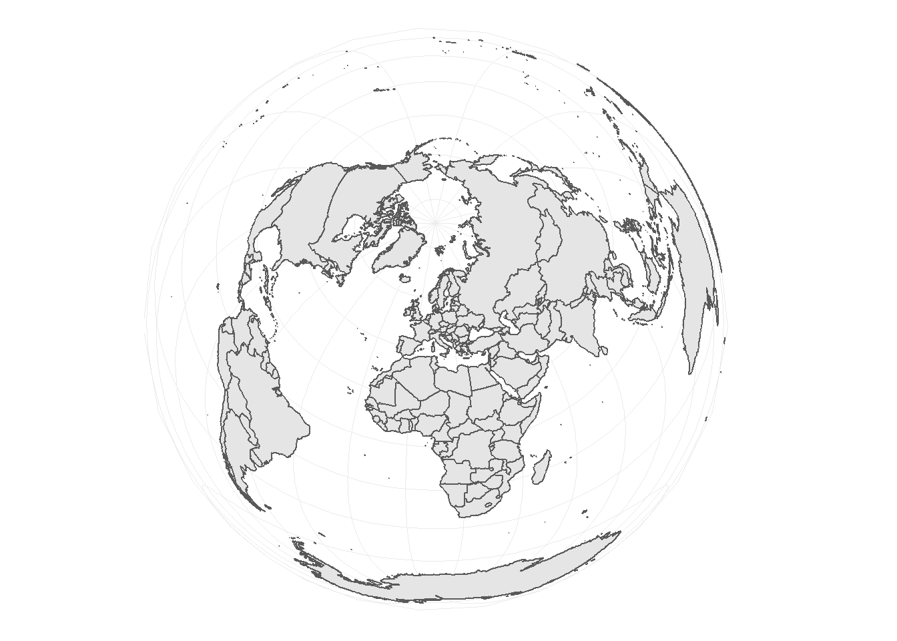
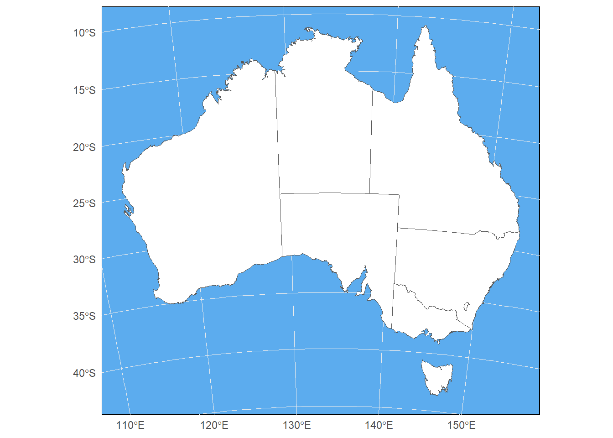
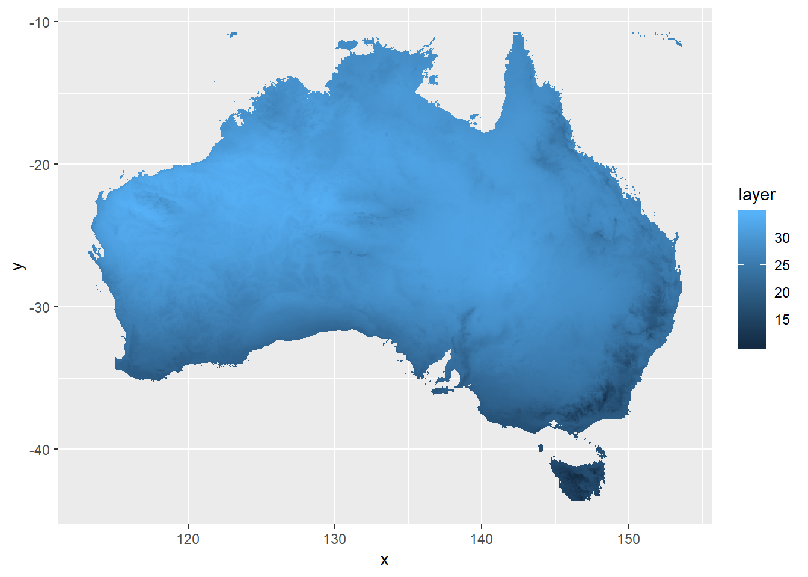
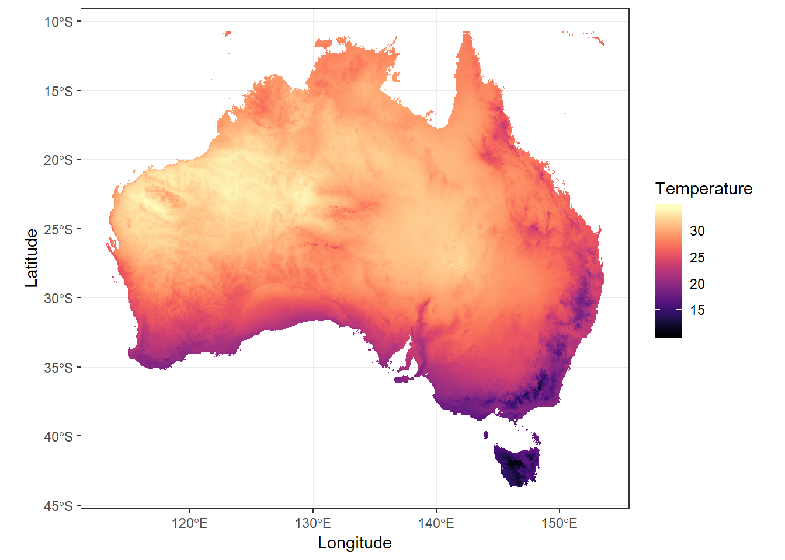

7 Plotting in ggplot2
7.1 Creating high quality graphics
Once you’ve completed your spatial data analysis you’re going to need to visualise it in some really nice figures for publication and/or presentations.
While you can create plots through various ways, including base R, the most popular method of producing fancy figures is with the ggplot2 package. You can plot raster and vector spatial data with ggplot2. Vector data represent geographical phenomena by points, lines and polygons. Raster is another representation of spatial data that consist of pixels.
First things first, if you haven’t done so yet, we need to install the ggplot2 package. You can install tidyverse package that is a collection of packages including ggplot2.
7.2 Grammar of Graphics
ggplot2 is built on the grammar of graphics concept: the idea that any plot can be expressed from the same set of components:
1. A data set
2. A coordinate system
3. A set of geoms - the visual representation of data points
The key to understanding ggplot2 is thinking about a figure in layers.
To start with we need to create the base layer for our plot. This is done with the ggplot() function, and it is here we define our data and coordinate system components. We set our data component using the data argument, and then use the aesthetic function aes() as a second argument to define our coordinate system. The aes() function can potentially be used multiple times when constructing our figure, so it is important to know that anything defined inside the base ggplot() function is a global option inherited by all subsequent layers.
# loading the libraries
library(sf)
library(raster)
library(tidyverse) # this includes ggplot
library(viridis) # for colour scheme## Loading required package: viridisLite7.3 Plotting spatial data in ggplot
7.3.1 Plotting vector data
Plotting vector data with sf is very easy! You only need to provide the data with a sf object and use geom_sf. No need to specify x and y coordinates.

Now, the colour and background can be changed.
ggplot(data = wmap) +
geom_sf(aes(fill = NAME)) +
theme_minimal() +
guides(fill = FALSE) # don't show legend
7.3.2 Different spatial reference in plotting
Use coord_sf to specify the projection that map is going to be plotted with.
## Coordinate Reference System:
## EPSG: 3035
## proj4string: "+proj=laea +lat_0=52 +lon_0=10 +x_0=4321000 +y_0=3210000 +ellps=GRS80 +towgs84=0,0,0,0,0,0,0 +units=m +no_defs"
You can aslo change the colour of background.
# read Australia polygon shapefile
au <- st_read("data/AU_states.shp",
quiet = TRUE)
ggplot(data = au) +
geom_sf(size = 0.3,
fill = "white") + # change the line size and polygon colours
theme_minimal() +
coord_sf(crs = 3112) +
theme(panel.background = element_rect(fill = "steelblue2"))
7.3.3 Plotting raster data
Raster can be large files containing millions of pixels. When you plot this data, the computer can not visualise all the details in the data. Plotting with full dataset could also be time-consuming. To plot rasters, it’s better to get a large sample of the data, then plot it. If the sample is large enough, the plotting quality won’t decrease.
# read Australia polygon shapefile
au <- st_read("data/AU_states.shp",
quiet = TRUE)
# reading raster data and clip and mask it for Australia
au_temp <- raster("data/wc_tavg/wc2.0_2.5m_tavg_01.tif") %>%
crop(au)
# regular sample of 500k cells
sam <- sampleRegular(au_temp,
size = 5e5,
asRaster = TRUE) %>%
as.data.frame(xy = TRUE,
na.rm = TRUE) %>%
setNames(c("x",
"y",
"layer"))
head(sam)## x y layer
## 190 122.9583 -10.73417 27.67500
## 191 123.0100 -10.73417 27.57143
## 192 123.0616 -10.73417 27.39091
## 193 123.1133 -10.73417 26.88400
## 194 123.1650 -10.73417 26.35200
## 195 123.2167 -10.73417 26.38800
You can change the colour and other parametrs of the plot to make it better. It is important to use coord_sf or coord_fixed to keep the dimention of the plot fixed.
ggplot(data = sam,
aes(x = x,
y = y,
fill = layer)) +
geom_raster() +
scale_fill_viridis(option = "A") +
labs(x = "Longitude",
y = "Latitude",
fill = "Temperature") +
coord_sf(crs = 4326) +
theme_bw()